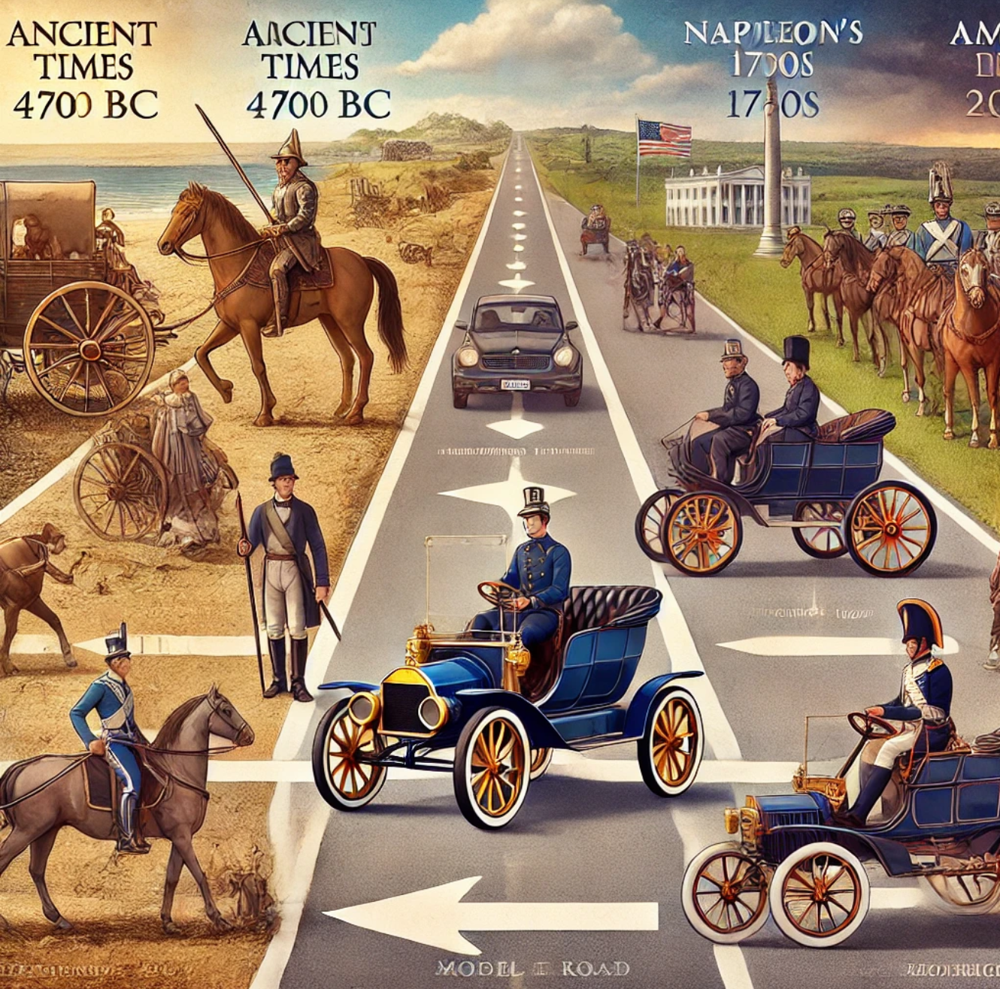
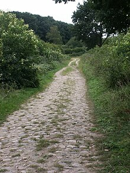
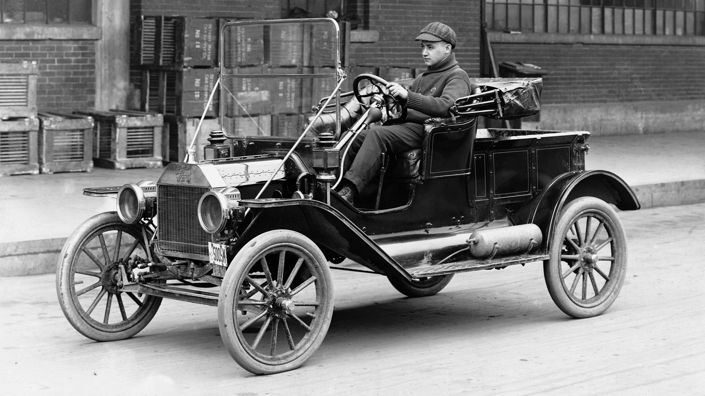

factFriday #1: Why do we drive on the right side of the road?

Just about 75% of the world drives on the right side of the road. Ok…why? To answer, let's go wayyy back and start with why some countries drive on the left. A long time ago (it doesn't matter when but like 4000bc tends to be when people agree roads were first used) people would walk on roads. When walking on the road, travelers would typically stick to the left. This was because if someone passed by a walker, he would want to have his sword on his dominant right side… just in case. Fast forward a couple hundred thousand years and now we got horses. Naturally many thought -> ride your horse on the left, sword on your right. In a more recent time, the united Kingdom actually made a law (like late 1700s?) that required horses/carriages/buggies to stick left. The logic stood the test of time. That was until a little guy named Napoleon had to go and conquer Europe. The french and especially Napoleon liked riding ON THE RIGHT (why is a tangent). Napoleon never conquered the UK, but he got pretty much everything else. And yes, all this translated to the first cars in the late 1800s and early 1900s. Although it didn’t happen immediately, it just became a thing, with the UK being an outlier.

So one guy kinda decided for Europe but what about us? Over in the new world there was no napoleon to rape everyone, however many already found themselves with a preference to right side riding. The americans believed that if you were riding in a carriage, you needed to whip the horses using your dominant hand, typically the right. And if you whip with your right, you could see more over to your left. It was a visibility factor. There was no written rule yet but it spread around enough and became common practice. And now we reach the era of the american vehicle. Although not the first american motor vehicle, Henry Ford’s model T was the first massively produced car on an assembly line. Its driver seat: The left side; ideal for driving on the right side of the road.

If you made it this far, thanks for reading. I have a couple more facts in storage but who knows how long this’ll last. Feel free to ask any questions about this fact or anything else really. Have a great weekend, see you next Friday.